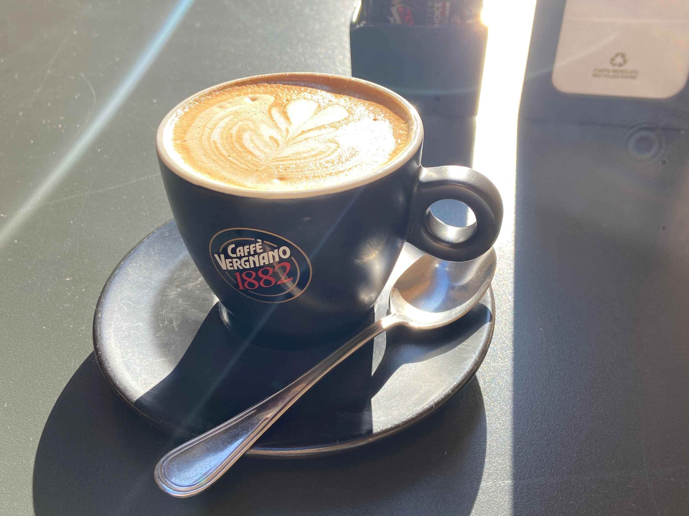
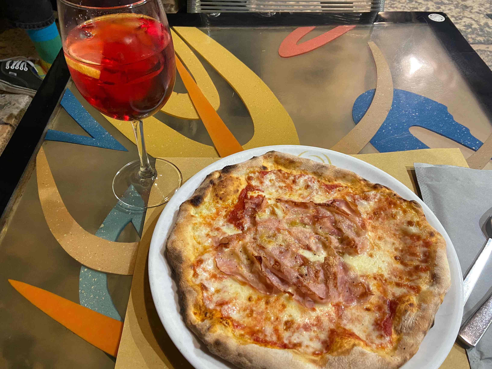
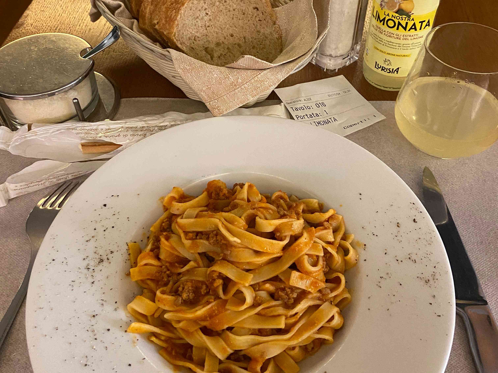

This was my very first trip to Italy.
I was really surprised that the food was much tastier than I had expected.
It was also affordable, and I could sense a certain "freshness" in the ingredients, which I have rarely found in the cuisine of other countries, even Japan.
これは私にとって初めてのイタリア旅行でした。
食事が期待していたよりもはるかに美味しくて、本当に驚きました。
価格も手頃で、他の国や日本でさえも滅多に感じられないような食材の「新鮮さ」を感じることができました。
現在の為替レートは、1ユーロ = 円 (時点) です。
ユーロ = 円

This cappuccino cost only around 1.8€, if I remember correctly.
The taste was relatively light, but the fragrance and flavor of the coffee were not weak at all.
このカプチーノは私の記憶が正しければ、わずか1.8ユーロほどでした。
味は比較的軽めでしたが、コーヒーの香りと風味は決して薄くありませんでした。

That was one of the best pizzas I've ever eaten.
The Aperol spritz had a really complex flavor, consisting of bitter citrus and herbs.
I think it is a perfect summer drink, but perhaps not the best pairing for pizza.
これは私が今まで食べた中で最高のピザの一つでした。
アペロールスプリッツは、苦味のある柑橘類とハーブが混ざり合った非常に複雑な味がしました。
夏の飲み物としては完璧だと思いますが、ピザにはあまり合わないかもしれません。

This tagliatelle was also good.
One thing I love is that you can usually get free cheese for your pasta, along with complimentary bread, in almost every restaurant.
The lemonade was also tasty. I wanted to buy the exact same one in a supermarket, but I couldn't find it.
このタリアテッレも美味しかったです。
私が気に入っているのは、ほぼすべてのレストランでパスタ用のチーズとパンが無料で提供されることです。
レモネードも美味しかったです。スーパーで全く同じものを買いたかったのですが、見つかりませんでした。